AI Meter
Local-first usage meter for Cursor, Claude, and Codex.
View project →JamesWare · Personal utility
Stay on plan. One day at a time.
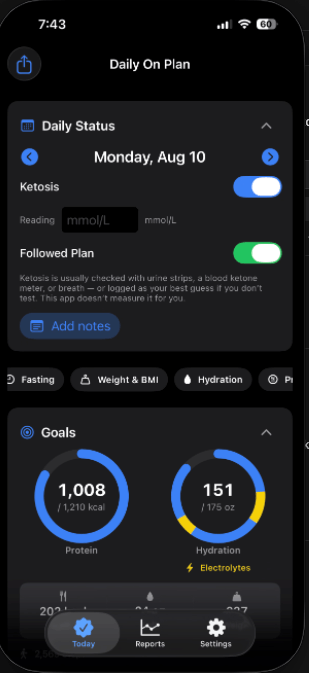
Protein-forward / ketosis-style weight loss is easier on paper than in another generic calorie social app. The sheet should stay yours.
Digitizes the daily log: protein toward a single goal, ketosis as a self-report, followed-plan Y/N with honest off-plan reason chips. Built first for one person.
Personal and sharp, not clinical. Daily ritual over social tracking. It should feel like your sheet, not a network.
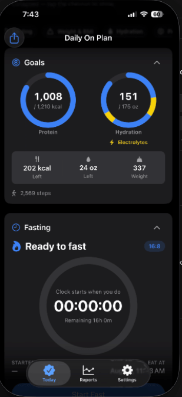
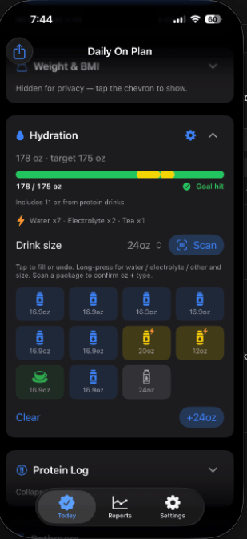
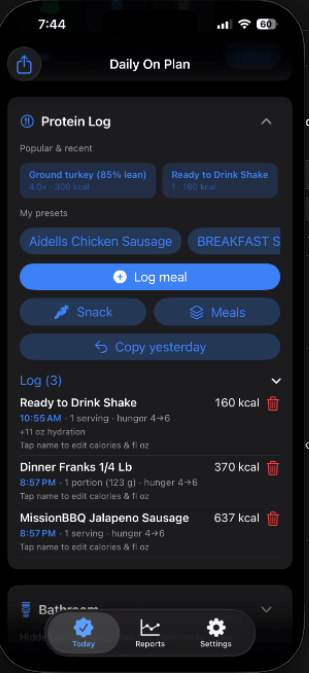
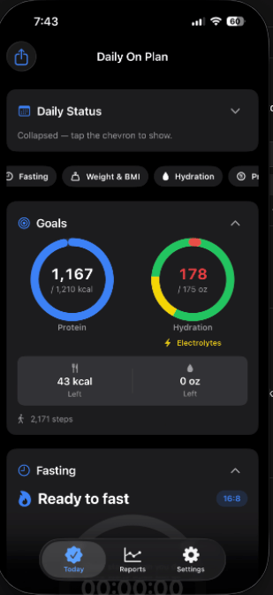
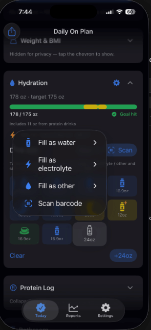
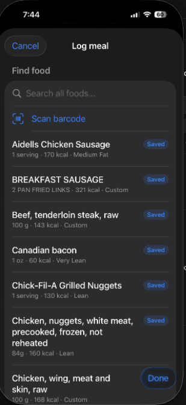
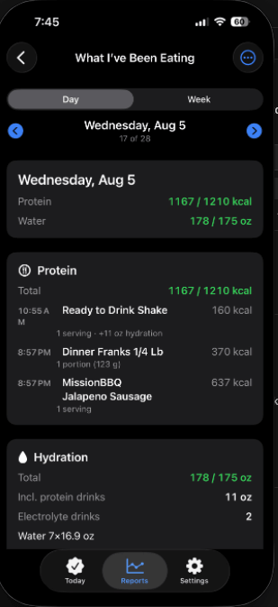
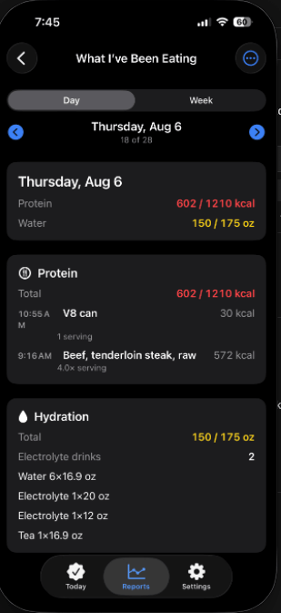
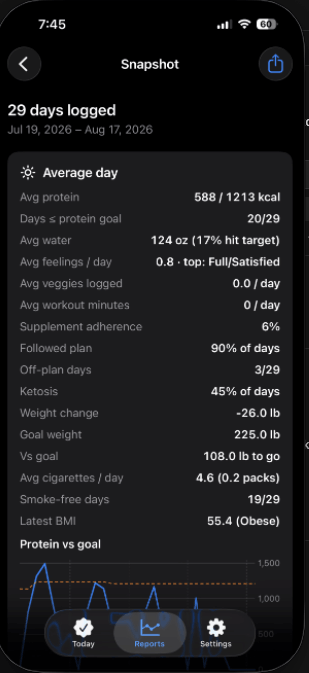
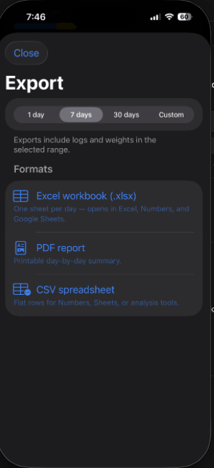
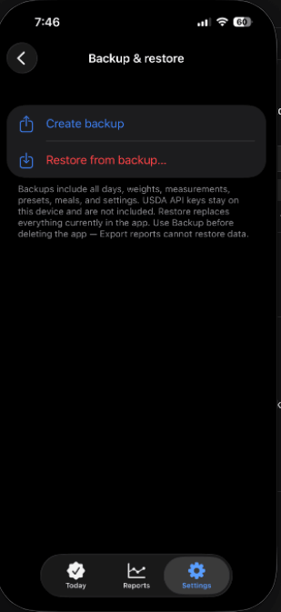
1 / 8 · Daily collapsed
The journal lives on iPhone, Watch, and Mac. Optional iCloud CloudKit syncs across the user’s iCloud — not a Daily On Plan server. No ads, no analytics SDKs, no sale of data. USDA API key stays in device Keychain. Notifications are local. Not a medical device. Not Android.
Building. Usable as a native app on James’s devices. Personal Xcode / sideload now; TestFlight and Universal Purchase planned. Not App Store–released. On Plan is short chrome (menu bar, spoken fallback). Daily On Plan is the shipping name.
No App Store listing yet. No fake download. When TestFlight exists, this button becomes a real link.
Local-first usage meter for Cursor, Claude, and Codex.
View project →Ounces to grams, and the portion mix, without a spreadsheet.
View project →